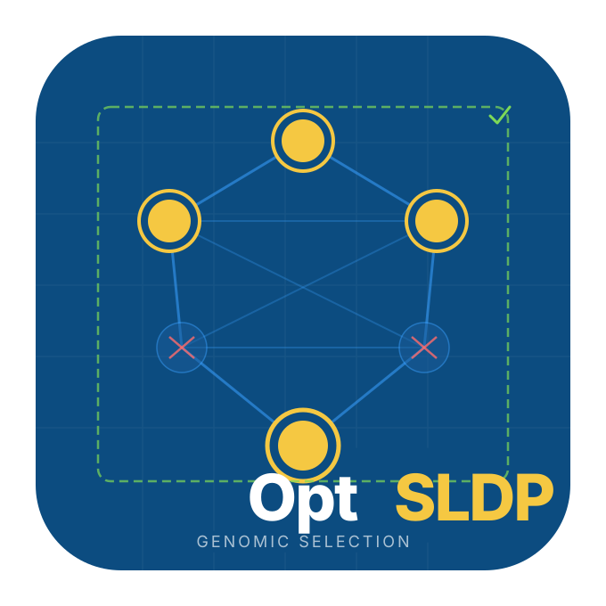

OptSLDP: An Optimized Selective Linkage Disequilibrium Pruning Pipeline
Félicien Akohoue
2026-04-05
Source:vignettes/OptSLDP-introduction.Rmd
OptSLDP-introduction.RmdIntroduction
OptSLDP is an optimized and extended R
implementation of the Selective Linkage Disequilibrium (LD) Pruning
pipeline for genomic prediction panel construction. The package builds
on the algorithm of Zhu et al. (2023), which demonstrated that
preserving markers in strong LD with statistically important SNPs
substantially improves genomic prediction accuracy compared to standard
uniform LD pruning. OptSLDP extends that work with four
concrete algorithmic improvements described in detail below.
Why standard LD pruning is not enough for genomic prediction
Standard LD pruning (e.g., PLINK --indep-pairwise)
removes one marker from every highly correlated pair without regard to
whether either marker is associated with the trait of interest. When a
QTL region contains a cluster of correlated markers, all but one are
discarded — yet the retained singleton may not be the best proxy for the
causal variant, and statistical evidence about the region is
reduced.
SLDP addresses this by partitioning the marker set into two groups before pruning:
- Important SNPs (\(\mathcal{I}\)): SNPs that are statistically associated with at least one trait, plus all markers in strong LD with them within a positional window. These are retained in full.
- Background SNPs (\(\mathcal{B} = \Omega \setminus \mathcal{I}\)): the remainder, which receives standard greedy LD pruning to control redundancy.
The final panel is \(\mathcal{I} \cup \text{retained}(\mathcal{B})\).
How OptSLDP improves on the original algorithm
| Improvement | Description |
|---|---|
| Chunked reading | Genotype files > 200 K rows read in 50 K-row chunks with a pre-allocated matrix; peak RAM is one chunk rather than twice the full file |
Per-chromosome gc()
|
gc(FALSE) called after each chromosome’s LD matrix is
released in both the pre-pruning and background-pruning loops |
| Multi-trait union protection | Screening and candidate selection run independently per trait; the union of all per-trait candidate sets drives expansion and protection |
| Covariate-adjusted screening | Phenotypes are residualised on shared covariates once before the SNP scan, equivalent to fitting covariates in every marginal regression |
| Vectorised OLS screening | Matrix algebra (tcrossprod via BLAS DGEMM) replaces
per-SNP lm() calls; 50-200x faster for large panels |
| C++ LD kernel |
r2_subset_cpp(),
above_threshold_subset_cpp(),
greedy_prune_r2_cpp() compiled via RcppArmadillo; zero R
interpreter overhead |
| C++ screening kernel |
screen_chunk_cpp() single-pass OLS per chunk; genotype
variance computed once and reused across all traits; 2-4x faster than R
matrix algebra |
| Batched LD expansion | Genotypes extracted once per chromosome; foverlaps()
O(n log n) joins replace O(n^2) loops; GDS reads reduced from thousands
to ~11 |
| Chromosome-streaming screening | Step 6 extracts and screens one 50k-SNP chunk at a time in GDS mode; peak RAM ~300 MB vs ~4 GB for full extraction |
| Chromosome-streaming output | Step 11 writes final panel chromosome-by-chromosome from GDS;
final_geno_mat is NULL for GDS runs |
| Parallel background pruning | Step 9 uses FORK workers (one GDS handle per worker) to prune chromosomes simultaneously; ~8x speedup on multi-core Linux servers |
Automatic PCA (n_pcs) |
PCs computed from a chromosome-balanced SNP subset via GRM eigendecomposition; no LD pruning pass required |
Installation
# Install from GitHub (with vignettes)
install.packages("remotes")
remotes::install_github("FAkohoue/OptSLDP",
build_vignettes = TRUE,
dependencies = TRUE
)
# Optional: VCF support (Bioconductor)
if (!requireNamespace("BiocManager", quietly = TRUE))
install.packages("BiocManager")
BiocManager::install(c("VariantAnnotation", "GenomeInfoDb",
"SummarizedExperiment", "Biostrings", "S4Vectors"))
# Optional: GDS backend for > 2 M SNP panels (Bioconductor)
BiocManager::install(c("SNPRelate", "gdsfmt"))
# Optional: faster PCA eigendecomposition for n_pcs > 0 (CRAN)
install.packages("RSpectra")When n_pcs > 0, OptSLDP selects the PCA backend
automatically:
-
RSpectrainstalled →RSpectra::eigs_sym()(partial eigendecomposition, faster for large sample sets > 500 samples) -
RSpectranot installed → baseeigen()(computes all eigenvalues, reliable on any platform, no extra dependencies)
A message is printed at runtime indicating which backend is used. To
force a specific backend, set pca_method = "rspectra" or
pca_method = "grm_eigen".
Load the package:
Example data
OptSLDP ships with a small synthetic dataset that can be
used to run all examples in this vignette without any external files.
The dataset was generated with a known genetic architecture so that
results can be validated against ground truth.
Dataset design
The example data contains:
- 40 SNPs on 2 chromosomes (20 per chromosome), positions 10 000–200 000
- 50 samples (Line01–Line50)
-
Three LD blocks:
- Block A: SNP001–SNP008 (chr1, \(r^2 \approx 0.80\))
- Block B: SNP012–SNP018 (chr1, \(r^2 \approx 0.60\))
- Block C: SNP023–SNP030 (chr2, \(r^2 \approx 0.80\))
-
~5% missing genotype values encoded as
NA(numeric),NN(HapMap), or./.(VCF) - Two traits with independent genetic architectures:
| Trait | QTN | Effects | Heritability | Notes |
|---|---|---|---|---|
| Trait1 | SNP003, SNP015, SNP025 | +0.80, −0.50, +0.65 | \(h^2 = 0.55\) | One QTN per LD block |
| Trait2 | SNP006, SNP028, SNP020 | +0.70, −0.60, +0.45 | \(h^2 = 0.45\) | SNP020 is a singleton outside all LD blocks |
The partial overlap of Trait1 and Trait2 across LD blocks (A and C), combined with Trait2’s unique singleton QTN at SNP020, tests whether the union-protection logic correctly retains SNP020 even though it is never a candidate under Trait1 alone.
Accessing example files
geno_file <- system.file("extdata", "example_genotypes_numeric.csv",
package = "OptSLDP")
pheno_file <- system.file("extdata", "example_phenotype.csv",
package = "OptSLDP")
hmp_file <- system.file("extdata", "example_genotypes.hmp.txt",
package = "OptSLDP")
vcf_file <- system.file("extdata", "example_genotypes.vcf",
package = "OptSLDP")Inspecting the example files
# Phenotype file: Sample, Trait1, Trait2, PC1, PC2
pheno_df <- read.csv(pheno_file)
head(pheno_df)
#> Sample Trait1 Trait2 PC1 PC2
#> 1 Line01 0.1168 0.1005 2.3620 -0.2476
#> 2 Line02 -0.4395 0.2927 -1.6091 1.3594
#> 3 Line03 0.5010 2.7570 0.1534 -0.6160
#> 4 Line04 -0.4069 -0.0895 0.9988 0.2635
#> 5 Line05 2.9317 0.5584 -0.8455 0.6307
#> 6 Line06 -2.0143 1.1936 2.2352 0.7531
dim(pheno_df)
#> [1] 50 5
# First few rows of the genotype file
geno_head <- read.csv(geno_file, check.names = FALSE)
geno_head[1:5, 1:8]
#> SNP CHR POS REF ALT Line01 Line02 Line03
#> 1 SNP001 1 10000 A T 1 0 1
#> 2 SNP002 1 20000 A T 0 1 1
#> 3 SNP003 1 30000 A G 0 0 1
#> 4 SNP004 1 40000 A G 1 1 1
#> 5 SNP005 1 50000 C G 0 0 1Reading input data
Genotype formats
OptSLDP supports three genotype input formats detected
automatically from the file extension.
Numeric dosage (CSV / TXT)
The standard format has columns SNP, CHR, POS, REF, ALT
followed by one column per sample. Values must be in \(\{0, 1, 2, \text{NA}\}\):
| SNP | CHR | POS | REF | ALT | Line01 | Line02 | … |
|---|---|---|---|---|---|---|---|
| SNP001 | 1 | 10000 | A | T | 0 | 1 | … |
| SNP002 | 1 | 20000 | G | C | 2 | 0 | … |
| SNP003 | 1 | 30000 | C | G | 1 | 2 | … |
geno_obj <- read_numeric_genotype(geno_file)
# Structure of the returned list
str(geno_obj, max.level = 1)
#> List of 4
#> $ snp_info :Classes 'data.table' and 'data.frame': 40 obs. of 5 variables:
#> ..- attr(*, ".internal.selfref")=<externalptr>
#> $ geno_mat : num [1:40, 1:50] 1 0 0 1 0 0 0 0 NA 1 ...
#> ..- attr(*, "dimnames")=List of 2
#> $ sample_ids: chr [1:50] "Line01" "Line02" "Line03" "Line04" ...
#> $ format : chr "numeric"
# SNP metadata
head(geno_obj$snp_info)
#> SNP CHR POS REF ALT
#> <char> <char> <int> <char> <char>
#> 1: SNP001 1 10000 A T
#> 2: SNP002 1 20000 A T
#> 3: SNP003 1 30000 A G
#> 4: SNP004 1 40000 A G
#> 5: SNP005 1 50000 C G
#> 6: SNP006 1 60000 T C
# Dimensions of the genotype matrix (SNPs × samples)
dim(geno_obj$geno_mat)
#> [1] 40 50
# Sample IDs
head(geno_obj$sample_ids)
#> [1] "Line01" "Line02" "Line03" "Line04" "Line05" "Line06"For files exceeding 200 000 rows, the reader automatically switches to a two-pass chunked strategy:
-
Pass 1 — header-only
fread(nrows = 0)to determine column names and count rows. -
Pre-allocation —
matrix(NA_real_, nrow, ncol)allocated once. -
Pass 2 — data filled in 50 000-row chunks; each
chunk is released and
gc(FALSE)called before reading the next.
The threshold and chunk size are configurable:
geno_obj <- read_numeric_genotype(
file = "large_panel.csv",
chunk_rows = 50000L, # rows per chunk (default)
chunk_threshold = 200000L # rows above which chunked reading is used
)HapMap format
hmp_obj <- read_hapmap_genotype(hmp_file)
str(hmp_obj, max.level = 1)
#> List of 4
#> $ snp_info :Classes 'data.table' and 'data.frame': 40 obs. of 5 variables:
#> ..- attr(*, ".internal.selfref")=<externalptr>
#> $ geno_mat : num [1:40, 1:50] 1 0 0 1 0 0 0 0 NA 1 ...
#> ..- attr(*, "dimnames")=List of 2
#> $ sample_ids: chr [1:50] "Line01" "Line02" "Line03" "Line04" ...
#> $ format : chr "hapmap"
head(hmp_obj$snp_info)
#> SNP CHR POS REF ALT
#> <char> <char> <int> <char> <char>
#> 1: SNP001 1 10000 A T
#> 2: SNP002 1 20000 A T
#> 3: SNP003 1 30000 A G
#> 4: SNP004 1 40000 A G
#> 5: SNP005 1 50000 C G
#> 6: SNP006 1 60000 T CHapMap nucleotide calls ("AA", "AT",
"TT", "NN") are converted to additive dosage
(0/1/2/NA) relative to the REF allele inferred from the
alleles column. The format has 11 metadata columns followed
by sample columns:
| rs# | alleles | chrom | pos | strand | … | QCcode | Line01 | Line02 | … |
|---|---|---|---|---|---|---|---|---|---|
| SNP001 | A/T | 1 | 10000 | + | … | NA | AA | AT | … |
| SNP002 | G/C | 1 | 20000 | + | … | NA | CC | GG | … |
| SNP003 | C/G | 1 | 30000 | + | … | NA | CG | GG | … |
VCF format
vcf_obj <- read_vcf_genotype(vcf_file)
str(vcf_obj, max.level = 1)
#> List of 4
#> $ snp_info :Classes 'data.table' and 'data.frame': 40 obs. of 5 variables:
#> ..- attr(*, ".internal.selfref")=<externalptr>
#> $ geno_mat : num [1:40, 1:50] 1 0 0 1 0 0 0 0 NA 1 ...
#> ..- attr(*, "dimnames")=List of 2
#> $ sample_ids: chr [1:50] "Line01" "Line02" "Line03" "Line04" ...
#> $ format : chr "vcf"Both phased (0|1) and unphased (0/1) GT
fields are accepted. The first 10 SNPs in the example VCF use phased
notation; the remainder use unphased — this exercises both parsing
branches. Multi-allelic sites use the first ALT allele:
| #CHROM | POS | ID | REF | ALT | QUAL | FILTER | INFO | FORMAT | Line01 | Line02 | … |
|---|---|---|---|---|---|---|---|---|---|---|---|
| 1 | 10000 | SNP001 | A | T | . | PASS | . | GT | 0/0 | 0/1 | … |
| 1 | 20000 | SNP002 | G | C | . | PASS | . | GT | 1/1 | 0/0 | … |
| 1 | 30000 | SNP003 | C | G | . | PASS | . | GT | 0/1 | 1/1 | … |
Automatic format dispatch
# Format detected from extension: .csv → numeric dosage
geno_auto <- read_genotype(geno_file)
identical(geno_auto$format, "numeric")
#> [1] TRUE
# Chromosome names: "chr1" and "1" are normalised at read time
# so downstream matching always works
head(geno_auto$snp_info$CHR)
#> [1] "1" "1" "1" "1" "1" "1"Phenotype file
pheno_obj <- read_phenotype(
file = pheno_file,
sample_col = "Sample",
trait_col = "Trait1",
covar_cols = c("PC1", "PC2"),
sample_order = geno_obj$sample_ids # drives row reordering
)
# Single trait: returns a plain numeric vector
class(pheno_obj$phenotype)
#> [1] "numeric"
length(pheno_obj$phenotype)
#> [1] 50
# Covariates as a data.frame
head(pheno_obj$covariates)
#> PC1 PC2
#> 1 2.3620 -0.2476
#> 2 -1.6091 1.3594
#> 3 0.1534 -0.6160
#> 4 0.9988 0.2635
#> 5 -0.8455 0.6307
#> 6 2.2352 0.7531
# Sample IDs in the aligned order
identical(pheno_obj$sample_ids, geno_obj$sample_ids)
#> [1] TRUEFor multiple traits, pass a character vector to
trait_col. The return value is then a named numeric matrix
(samples × traits):
pheno_multi <- read_phenotype(
file = pheno_file,
sample_col = "Sample",
trait_col = c("Trait1", "Trait2"),
covar_cols = c("PC1", "PC2"),
sample_order = geno_obj$sample_ids
)
# Multiple traits: returns a matrix
class(pheno_multi$phenotype)
#> [1] "matrix" "array"
dim(pheno_multi$phenotype)
#> [1] 50 2
colnames(pheno_multi$phenotype)
#> [1] "Trait1" "Trait2"Quality control
Minor allele frequency
The ALT allele frequency is estimated from the dosage matrix:
\[\text{AF}_i = \frac{\sum_j g_{ij}}{2\, n_i}\]
where \(g_{ij} \in \{0, 1, 2, \text{NA}\}\) is the dosage for SNP \(i\) in sample \(j\), and \(n_i\) is the number of non-missing samples for SNP \(i\). The minor allele frequency is:
\[\text{MAF}_i = \min(\text{AF}_i,\; 1 - \text{AF}_i)\]
maf_dt <- compute_maf(geno_obj$geno_mat)
head(maf_dt)
#> SNP AF MAF
#> <char> <num> <num>
#> 1: SNP001 0.2395833 0.2395833
#> 2: SNP002 0.2604167 0.2604167
#> 3: SNP003 0.2659574 0.2659574
#> 4: SNP004 0.2500000 0.2500000
#> 5: SNP005 0.2934783 0.2934783
#> 6: SNP006 0.2446809 0.2446809
# Distribution of MAF across the example panel
summary(maf_dt$MAF)
#> Min. 1st Qu. Median Mean 3rd Qu. Max.
#> 0.1667 0.2774 0.3233 0.3314 0.3856 0.4898
hist(
maf_dt$MAF,
breaks = 10,
col = "steelblue",
border = "white",
main = "MAF distribution",
xlab = "Minor allele frequency",
ylab = "Number of SNPs"
)
abline(v = 0.05, col = "firebrick", lty = 2, lwd = 2)
legend("topright", legend = "MAF = 0.05 threshold",
col = "firebrick", lty = 2, lwd = 2, bty = "n")
MAF distribution across the 40 example SNPs.
MAF filtering
maf_res <- filter_snps_by_maf(
snp_info = geno_obj$snp_info,
geno_mat = geno_obj$geno_mat,
maf_threshold = 0.05
)
cat("SNPs before MAF filter:", nrow(geno_obj$snp_info), "\n")
#> SNPs before MAF filter: 40
cat("SNPs after MAF filter:", nrow(maf_res$snp_info), "\n")
#> SNPs after MAF filter: 40
cat("Removed:", nrow(geno_obj$snp_info) - nrow(maf_res$snp_info), "\n")
#> Removed: 0High-LD pre-pruning
Before screening, near-duplicate SNPs (\(r^2 \ge \tau_{\text{pre}}\), default 0.99) are removed chromosome-by-chromosome with a greedy forward-selection algorithm. This step targets perfect or near-perfect redundancy (duplicate probes, collapsed haplotypes) without removing biological LD signal.
pre_res <- preprune_high_ld(
snp_info = maf_res$snp_info,
geno_mat = maf_res$geno_mat,
r2_pre = 0.99,
verbose = FALSE
)
cat("SNPs before pre-pruning:", nrow(maf_res$snp_info), "\n")
#> SNPs before pre-pruning: 40
cat("SNPs after pre-pruning:", nrow(pre_res$snp_info), "\n")
#> SNPs after pre-pruning: 40At the end of each chromosome’s loop, the \(r^2\) matrix is freed immediately and
gc(FALSE) is called, preventing heap fragmentation from
accumulating across chromosomes:
# Internal logic in preprune_high_ld() and prune_background_snps()
r2_mat <- compute_r2_subset(geno_mat, chr_snps)
# ... pruning loop ...
rm(r2_mat, kept)
gc(FALSE) # explicit release before the next chromosomeMarginal SNP screening
Statistical model: GLM + PCA
OptSLDP uses a Generalised Linear Model (GLM) with principal component covariates for marker screening. For each SNP \(i\), a marginal linear regression is fitted:
\[y^* = \alpha + \beta_i\, g_i + \varepsilon, \quad \varepsilon \sim \mathcal{N}(0, \sigma^2 I)\]
where \(y^*\) is the population-structure-adjusted phenotype, \(g_i\) is the dosage vector for SNP \(i\), and \(\alpha\), \(\beta_i\) are intercept and effect size.
Why GLM + PCA for panel construction?
The SLDP screening step has a fundamentally different objective from a standard GWAS. Its purpose is to identify which genomic regions carry relevant biological signal so that all markers in those regions can be protected from LD pruning. This distinction changes which statistical properties matter:
False positives are tolerable. A false-positive candidate SNP causes its surrounding \(\pm w\) kb window to be retained in the panel. This adds a modest number of extra markers but does not corrupt the panel or bias downstream genomic prediction models. The final panel size increases slightly but all true signal is preserved.
False negatives are the real risk. If a true QTL region is missed by an overly conservative screening model, its markers are pruned away and permanently lost from the panel. GLM + PCA controls gross inflation from population stratification without over-correcting and suppressing true biological signal.
The LD expansion layer provides a natural buffer. Even if a causal variant is not itself significant, any flanking SNP within \(\pm w\) kb that passes the threshold will pull the entire window into the protected set. This makes the panel robust to moderate screening imprecision.
Mixed model approaches (EMMA, EMMAX, GCTA-MLMA) are statistically
more powerful for fine-mapping but add \(O(n^3)\) computational cost from the
eigendecomposition of the genomic relationship matrix. This cost is
unnecessary for the panel construction objective. For datasets with
strong population structure, increasing n_pcs from 3 to 5
is usually sufficient.
Population structure correction
When covariates \(X_c\) (PC scores) are supplied, the phenotype is residualised once before the SNP loop:
\[y^* = M_{X_c}\, y = \left[I - X_c(X_c^\top X_c)^{-1} X_c^\top\right] y\]
This is equivalent to fitting \(y \sim X_c
+ g_i\) for every SNP but avoids refitting covariates in each
regression, giving an \(O(n_c)\) saving
over \(O(n_c \cdot p)\). When
n_pcs > 0 and covar_cols = NULL, PCs are
computed automatically from a LD-pruned SNP subset before screening
begins.
Reported statistics per SNP:
beta — Effect size: \[\hat{\beta}_i = \frac{\text{Cov}(g_i,
y^*)}{\text{Var}(g_i)}\]
SE — Standard error: \[\widehat{\text{SE}}(\hat{\beta}_i) =
\sqrt{\frac{\hat{\sigma}^2}{\sum_j(g_{ij}-\bar{g}_i)^2}}, \quad
\hat{\sigma}^2 = \frac{\text{RSS}}{n-2}\]
z_score — z-score: \[z_i =
\frac{\hat{\beta}_i}{\widehat{\text{SE}}(\hat{\beta}_i)}\]
P.value — Two-tailed \(t\)-test: \[p_i
= 2\,\Pr\!\left(T_{n-2} > |z_i|\right)\]
PVE — \(R^2_i\) from the marginal regression.
AF — ALT allele frequency \(= \bar{g}_i / 2\).
MAF — \(\min(\text{AF}_i,\;1-\text{AF}_i)\).
SNPs with fewer than 5 complete observations or zero variance receive
NA for all statistical columns.
Single-trait screening
geno_mat_filt <- pre_res$geno_mat
snp_info_filt <- pre_res$snp_info
phenotype_vec <- pheno_obj$phenotype
covariates_df <- pheno_obj$covariates
screen_stats <- compute_screening_stats(
geno_mat = geno_mat_filt,
y = phenotype_vec,
covar = covariates_df,
verbose = FALSE
)
# Returns a single data.table
class(screen_stats)
#> [1] "data.table" "data.frame"
head(screen_stats[order(screen_stats$P.value), ])
#> SNP beta SE z_score P.value PVE AF
#> <char> <num> <num> <num> <num> <num> <num>
#> 1: SNP003 1.1243981 0.1934965 5.810948 5.953775e-07 0.42869561 0.2659574
#> 2: SNP027 0.7623136 0.2422588 3.146692 2.864589e-03 0.17401369 0.3061224
#> 3: SNP008 0.7672748 0.2562695 2.994016 4.380530e-03 0.16017636 0.2346939
#> 4: SNP007 0.8810330 0.3214913 2.740457 8.899340e-03 0.14868519 0.1666667
#> 5: SNP006 0.6010403 0.2562338 2.345672 2.345987e-02 0.10894928 0.2446809
#> 6: SNP013 -0.5981211 0.2745112 -2.178859 3.439012e-02 0.09174224 0.1836735
#> MAF
#> <num>
#> 1: 0.2659574
#> 2: 0.3061224
#> 3: 0.2346939
#> 4: 0.1666667
#> 5: 0.2446809
#> 6: 0.1836735
# Known QTN positions for Trait1
qtn1 <- c("SNP003", "SNP015", "SNP025")
screen_plot <- screen_stats[!is.na(screen_stats$P.value), ]
screen_plot$neg_log_p <- -log10(screen_plot$P.value)
screen_plot$is_qtn <- screen_plot$SNP %in% qtn1
plot(
seq_len(nrow(screen_plot)),
screen_plot$neg_log_p,
pch = ifelse(screen_plot$is_qtn, 18, 16),
col = ifelse(screen_plot$is_qtn, "firebrick", "steelblue"),
cex = ifelse(screen_plot$is_qtn, 1.8, 1.0),
xlab = "SNP index",
ylab = expression(-log[10](p)),
main = "Marginal screening — Trait1",
las = 1
)
abline(h = -log10(0.05), col = "darkorange", lty = 2)
legend("topright",
legend = c("Non-QTN", "QTN (known)", "p = 0.05"),
pch = c(16, 18, NA),
lty = c(NA, NA, 2),
col = c("steelblue", "firebrick", "darkorange"),
bty = "n", pt.cex = c(1, 1.5, 1))
Manhattan-style plot of −log10(p) for Trait1. Known QTN positions are highlighted in red.
Multi-trait screening
When y is a numeric matrix (samples × traits),
compute_screening_stats() returns a named
list of per-trait data.tables:
pheno_matrix <- pheno_multi$phenotype # 50 × 2 matrix
screen_list <- compute_screening_stats(
geno_mat = geno_mat_filt,
y = pheno_matrix,
covar = pheno_multi$covariates,
verbose = FALSE
)
# Named list, one data.table per trait
names(screen_list)
#> [1] "Trait1" "Trait2"
head(screen_list$Trait1[order(screen_list$Trait1$P.value), ])
#> SNP beta SE z_score P.value PVE AF
#> <char> <num> <num> <num> <num> <num> <num>
#> 1: SNP003 1.1243981 0.1934965 5.810948 5.953775e-07 0.42869561 0.2659574
#> 2: SNP027 0.7623136 0.2422588 3.146692 2.864589e-03 0.17401369 0.3061224
#> 3: SNP008 0.7672748 0.2562695 2.994016 4.380530e-03 0.16017636 0.2346939
#> 4: SNP007 0.8810330 0.3214913 2.740457 8.899340e-03 0.14868519 0.1666667
#> 5: SNP006 0.6010403 0.2562338 2.345672 2.345987e-02 0.10894928 0.2446809
#> 6: SNP013 -0.5981211 0.2745112 -2.178859 3.439012e-02 0.09174224 0.1836735
#> MAF
#> <num>
#> 1: 0.2659574
#> 2: 0.3061224
#> 3: 0.2346939
#> 4: 0.1666667
#> 5: 0.2446809
#> 6: 0.1836735
head(screen_list$Trait2[order(screen_list$Trait2$P.value), ])
#> SNP beta SE z_score P.value PVE AF
#> <char> <num> <num> <num> <num> <num> <num>
#> 1: SNP020 0.8581281 0.2037771 4.211112 0.0001169382 0.2782442 0.4062500
#> 2: SNP028 -0.8623397 0.2598476 -3.318637 0.0017528700 0.1898417 0.3265306
#> 3: SNP005 0.7522204 0.2581387 2.914016 0.0055901914 0.1617689 0.2934783
#> 4: SNP036 0.6135889 0.2413778 2.542027 0.0144537069 0.1231732 0.3541667
#> 5: SNP019 -0.5467090 0.2256044 -2.423308 0.0194647272 0.1154343 0.3936170
#> 6: SNP006 0.6990698 0.2892943 2.416466 0.0197904088 0.1148581 0.2446809
#> MAF
#> <num>
#> 1: 0.4062500
#> 2: 0.3265306
#> 3: 0.2934783
#> 4: 0.3541667
#> 5: 0.3936170
#> 6: 0.2446809
qtn2 <- c("SNP006", "SNP028", "SNP020")
p1 <- -log10(screen_list$Trait1$P.value)
p2 <- -log10(screen_list$Trait2$P.value)
xlim_max <- max(p1, na.rm = TRUE) * 1.05
ylim_max <- max(p2, na.rm = TRUE) * 1.05
plot(p1, p2,
pch = 16,
col = "grey60",
xlab = expression(Trait1~~-log[10](p)),
ylab = expression(Trait2~~-log[10](p)),
main = "Marginal p-values: Trait1 vs Trait2",
xlim = c(0, xlim_max), ylim = c(0, ylim_max))
# Highlight QTN
points(p1[screen_list$Trait1$SNP %in% qtn1],
p2[screen_list$Trait1$SNP %in% qtn1],
pch = 17, col = "firebrick", cex = 1.6)
points(p1[screen_list$Trait2$SNP %in% qtn2],
p2[screen_list$Trait2$SNP %in% qtn2],
pch = 15, col = "darkorange", cex = 1.6)
abline(h = -log10(0.05), v = -log10(0.05),
col = "steelblue", lty = 2)
legend("topright",
legend = c("Background", "Trait1 QTN", "Trait2 QTN", "p = 0.05"),
pch = c(16, 17, 15, NA), lty = c(NA, NA, NA, 2),
col = c("grey60", "firebrick", "darkorange", "steelblue"),
bty = "n")
Comparison of −log10(p) between Trait1 and Trait2. Known QTN for each trait are highlighted.
Candidate SNP selection
Selection modes
Three modes map screening statistics to a candidate set \(\mathcal{C}\):
Mode A — p-value threshold
\[\mathcal{C}_A = \{i : p_i \le \tau_p\}\]
cands_A <- select_candidate_snps(
screen_stats,
mode = "A",
pval_threshold = 0.05
)
cat("Mode A candidates:", length(cands_A), "\n")
#> Mode A candidates: 7
cands_A
#> [1] "SNP003" "SNP006" "SNP007" "SNP008" "SNP009" "SNP013" "SNP027"Mode B — effect-size criteria
\[\mathcal{C}_B = \{i : |z_i| \ge \tau_z \;\text{[AND/OR]}\; R^2_i \ge \tau_{\text{pve}}\}\]
# OR logic: keep SNPs with large z OR meaningful PVE
cands_B <- select_candidate_snps(
screen_stats,
mode = "B",
z_threshold = 2.0,
pve_threshold = 0.05,
logic = "OR"
)
cat("Mode B (OR) candidates:", length(cands_B), "\n")
#> Mode B (OR) candidates: 15
# AND logic: require both criteria simultaneously
cands_B_and <- select_candidate_snps(
screen_stats,
mode = "B",
z_threshold = 2.0,
pve_threshold = 0.05,
logic = "AND"
)
cat("Mode B (AND) candidates:", length(cands_B_and), "\n")
#> Mode B (AND) candidates: 8Mode C — hybrid
\[\mathcal{C}_C = \{i : p_i \le \tau_p \;\text{[AND/OR]}\; |z_i| \ge \tau_z\}\]
cands_C <- select_candidate_snps(
screen_stats,
mode = "C",
pval_threshold = 0.05,
z_threshold = 1.5,
logic = "OR"
)
cat("Mode C (OR) candidates:", length(cands_C), "\n")
#> Mode C (OR) candidates: 15Threshold guidance
| Mode | Use case | Key parameters |
|---|---|---|
| A | Clear significance cutoff available (e.g., Bonferroni, permutation threshold) | pval_threshold |
| B | No significance cutoff; select by effect magnitude |
z_threshold, pve_threshold,
logic
|
| C | Capture SNPs significant OR large-effect (comprehensive) | all three thresholds + logic
|
For Mode A, a Bonferroni threshold for the example data (40 tests):
alpha_bonf <- 0.05 / nrow(screen_stats)
cat("Bonferroni threshold:", formatC(alpha_bonf, format = "e", digits = 3), "\n")
#> Bonferroni threshold: 1.250e-03
cands_bonf <- select_candidate_snps(
screen_stats,
mode = "A",
pval_threshold = alpha_bonf
)
cat("Candidates at Bonferroni:", length(cands_bonf), "—", cands_bonf, "\n")
#> Candidates at Bonferroni: 1 — SNP003Important SNP expansion
Candidate SNPs are expanded into a protected set \(\mathcal{I}\) in two layers:
Layer 1 — positional window:
\[\mathcal{W}(c) = \{i : \text{chr}(i) = \text{chr}(c),\; |\text{pos}(i) - \text{pos}(c)| \le w\}\]
where \(w = w_{\text{kb}} \times 1000\) bp (default \(w = 50\,000\) bp each side).
Layer 2 — LD neighbours (optional):
\[\mathcal{L}(c) = \{i \in \mathcal{W}(c) : r^2(i, c) \ge \tau_{\text{flag}}\}\]
The protected set is the union over all candidates:
\[\mathcal{I} = \bigcup_{c \in \mathcal{C}} \left[\mathcal{W}(c) \cup \mathcal{L}(c)\right]\]
important <- expand_important_snps(
candidate_snps = cands_A,
snp_info = snp_info_filt,
geno_mat = geno_mat_filt,
window_kb = 50,
include_ld_neighbors = TRUE,
r2_flag = 0.90,
verbose = FALSE
)
cat("Candidate SNPs: ", length(cands_A), "\n")
#> Candidate SNPs: 7
cat("Important SNPs: ", length(important), "\n")
#> Important SNPs: 29
cat("Added by expansion:", length(important) - length(cands_A), "\n")
#> Added by expansion: 22
cat("\nImportant SNP set:\n")
#>
#> Important SNP set:
print(sort(important))
#> [1] "SNP001" "SNP002" "SNP003" "SNP004" "SNP005" "SNP006" "SNP007" "SNP008"
#> [9] "SNP009" "SNP010" "SNP011" "SNP012" "SNP013" "SNP014" "SNP015" "SNP016"
#> [17] "SNP017" "SNP018" "SNP022" "SNP023" "SNP024" "SNP025" "SNP026" "SNP027"
#> [25] "SNP028" "SNP029" "SNP030" "SNP031" "SNP032"The \(r^2\) statistic is the squared Pearson correlation computed from the dosage matrix with pairwise-complete observations:
\[r^2(i, j) = \left[\frac{\text{Cov}(g_i, g_j)}{\sqrt{\text{Var}(g_i)\, \text{Var}(g_j)}}\right]^2\]
# Direct access to the pairwise r² matrix for a SNP subset
block_a_snps <- paste0("SNP", sprintf("%03d", 1:8))
r2_block_a <- compute_r2_subset(geno_mat_filt, block_a_snps)
round(r2_block_a, 2)
#> SNP001 SNP002 SNP003 SNP004 SNP005 SNP006 SNP007 SNP008
#> SNP001 1.00 0.02 0.05 0.09 0.33 0.13 0.11 0.14
#> SNP002 0.02 1.00 0.06 0.11 0.08 0.11 0.26 0.10
#> SNP003 0.05 0.06 1.00 0.02 0.13 0.13 0.19 0.33
#> SNP004 0.09 0.11 0.02 1.00 0.19 0.09 0.25 0.11
#> SNP005 0.33 0.08 0.13 0.19 1.00 0.20 0.24 0.26
#> SNP006 0.13 0.11 0.13 0.09 0.20 1.00 0.17 0.25
#> SNP007 0.11 0.26 0.19 0.25 0.24 0.17 1.00 0.43
#> SNP008 0.14 0.10 0.33 0.11 0.26 0.25 0.43 1.00Background LD pruning
All SNPs outside \(\mathcal{I}\) form the background set \(\mathcal{B} = \Omega \setminus \mathcal{I}\). A greedy forward-selection algorithm is applied chromosome-by-chromosome in genomic position order:
\[\text{for each SNP } i \text{ in } \mathcal{B}_{\text{chr}}: \quad \text{discard } j > i \text{ if } r^2(i, j) \ge \tau_{\text{genome}}\]
The default genome-wide pruning threshold is \(\tau_{\text{genome}} = 0.80\).
remaining <- setdiff(snp_info_filt$SNP, important)
cat("Background SNPs to prune:", length(remaining), "\n")
#> Background SNPs to prune: 11
bg_retained <- prune_background_snps(
remaining_snps = remaining,
snp_info = snp_info_filt,
geno_mat = geno_mat_filt,
r2_genome = 0.80,
verbose = FALSE
)
cat("Background retained after pruning:", length(bg_retained), "\n")
#> Background retained after pruning: 11The final panel combines both sets:
final_snps <- unique(c(important, bg_retained))
cat("Total final panel:", length(final_snps), "SNPs\n")
#> Total final panel: 40 SNPs
# Are known QTN in the final panel?
cat("\nTrait1 QTN retained?", all(qtn1 %in% final_snps), "\n")
#>
#> Trait1 QTN retained? TRUE
cat("QTN1 IDs:", paste(qtn1[qtn1 %in% final_snps], collapse = ", "), "\n")
#> QTN1 IDs: SNP003, SNP015, SNP025Input cleaning
Some variant callers (e.g. NGSEP) produce genotype files with
malformed lines – rows where embedded delimiter characters cause the
column count to exceed the header. clean_genotype_file()
removes such lines by streaming through the file in 50 000-line
chunks:
- For VCF files, comment lines (
#) are passed through and the column count is established from the#CHROMheader line. - For numeric CSV and HapMap files, the first line is the header.
- The separator is detected automatically from the file extension
(
vcf/hmp-> tab, everything else -> comma).
# Standalone use: clean before analysis
clean_genotype_file(
file_in = "raw_ngsep.vcf.gz",
file_out = "cleaned.vcf.gz",
verbose = TRUE
)Alternatively, pass clean_malformed = TRUE to
run_sldp() and the cleaning step is integrated
automatically as part of step 1:
res <- run_sldp(
genotype_file = "raw_ngsep.vcf.gz",
phenotype_file = "phenotype.csv",
output_file = "panel_pruned.csv",
format = "vcf",
clean_malformed = TRUE, # cleans any format: vcf, hapmap, numeric
trait_col = c("BL", "NBL"),
mode = "A",
pval_threshold = 0.05,
verbose = TRUE
)The cleaned temporary file is deleted automatically after reading completes. No manual steps are required.
The run_sldp() pipeline
run_sldp() executes all steps above in a single
end-to-end call. The user provides two files (genotype and phenotype)
and an output path; everything else is handled internally.
Step-by-step overview
| Step | Action | Key parameters |
|---|---|---|
| 1 | Read genotype file (optionally clean malformed lines) |
format, clean_malformed
|
| 2 | Read and align phenotype |
sample_col, trait_col,
covar_cols
|
| 3 | Select scale strategy |
scale_strategy, gds_dir,
n_cores
|
| 3b | Automatic PCA (optional) | n_pcs |
| 4 | MAF filter | maf_threshold |
| 5 (optional) | High-LD pre-pruning |
preprune_large, preprune_r2
|
| 6 | Chromosome-streaming screening: one chromosome extracted, screened and freed at a time (GDS); full matrix screened directly (in_memory/chunked) | — |
| 7 | Candidate selection from pre-computed screening statistics |
mode, pval_threshold,
z_threshold, pve_threshold,
threshold_logic
|
| 8 | Important SNP expansion |
window_kb, include_ld_neighbors,
r2_flag
|
| 9 | Background LD pruning |
r2_genome, slide_max_bp
|
| 10 | Merge important + retained background | — |
| 11 | Write pruned output file: chromosome-streaming from GDS
(GDS) or direct write (in_memory/chunked);
final_geno_mat is NULL for GDS runs |
output_format |
| 12 | Write pruning report (optional) |
stats_output_file,
summary_output_file
|
Single-trait run (Mode A)
out_file <- tempfile(fileext = ".csv")
res_single <- run_sldp(
genotype_file = geno_file,
phenotype_file = pheno_file,
output_file = out_file,
sample_col = "Sample",
trait_col = "Trait1",
covar_cols = c("PC1", "PC2"),
format = "numeric",
output_format = "numeric",
mode = "A",
maf_threshold = 0.05,
preprune_large = TRUE,
preprune_r2 = 0.99,
pval_threshold = 0.05,
window_kb = 50,
r2_flag = 0.90,
r2_genome = 0.80,
verbose = FALSE
)
# Summary of the result
cat("Scale strategy used:", res_single$scale_strategy, "\n")
#> Scale strategy used: in_memory
cat("Candidate SNPs: ", length(res_single$candidate_snps), "\n")
#> Candidate SNPs: 7
cat("Important SNPs: ", length(res_single$important_snps), "\n")
#> Important SNPs: 29
cat("Background retained:", length(res_single$background_retained), "\n")
#> Background retained: 11
cat("Final panel size: ", nrow(res_single$final_snp_info), "\n")
#> Final panel size: 40
# Confirm known Trait1 QTN are in the final panel
cat("\nTrait1 QTN in final panel?\n")
#>
#> Trait1 QTN in final panel?
cat(paste(qtn1, ":", qtn1 %in% res_single$final_snp_info$SNP), "\n")
#> SNP003 : TRUE SNP015 : TRUE SNP025 : TRUEInspecting the result object
# Final SNP metadata (ordered by CHR, POS)
head(res_single$final_snp_info)
#> SNP CHR POS REF ALT
#> <char> <char> <int> <char> <char>
#> 1: SNP001 1 10000 A T
#> 2: SNP002 1 20000 A T
#> 3: SNP003 1 30000 A G
#> 4: SNP004 1 40000 A G
#> 5: SNP005 1 50000 C G
#> 6: SNP006 1 60000 T C
# Screening statistics
head(res_single$screening_stats[order(res_single$screening_stats$P.value), ])
#> SNP beta SE z_score P.value PVE AF
#> <char> <num> <num> <num> <num> <num> <num>
#> 1: SNP003 1.1243981 0.1934965 5.810948 5.953775e-07 0.42869561 0.2659574
#> 2: SNP027 0.7623136 0.2422588 3.146692 2.864589e-03 0.17401369 0.3061224
#> 3: SNP008 0.7672748 0.2562695 2.994016 4.380530e-03 0.16017636 0.2346939
#> 4: SNP007 0.8810330 0.3214913 2.740457 8.899340e-03 0.14868519 0.1666667
#> 5: SNP006 0.6010403 0.2562338 2.345672 2.345987e-02 0.10894928 0.2446809
#> 6: SNP013 -0.5981211 0.2745112 -2.178859 3.439012e-02 0.09174224 0.1836735
#> MAF
#> <num>
#> 1: 0.2659574
#> 2: 0.3061224
#> 3: 0.2346939
#> 4: 0.1666667
#> 5: 0.2446809
#> 6: 0.1836735
# Step-by-step pruning counts
print(res_single$pruning_stats)
#> step n_before n_after n_removed details
#> <char> <int> <int> <int> <char>
#> 1: input 40 40 0 format=numeric
#> 2: maf_filter 40 40 0 maf>=0.05
#> 3: preprune_high_ld 40 40 0 r2>=0.99
#> 4: candidate_threshold 40 7 33 mode=A
#> 5: important_expansion 7 29 -22 window_kb=50; r2_flag=0.9
#> 6: background_prune 11 11 0 r2_genome=0.8
#> 7: final_merge 40 40 0 important + pruned backgroundVisualising the pruning cascade
ps <- res_single$pruning_stats
ps <- ps[ps$step != "input", ]
barplot(
ps$n_after,
names.arg = ps$step,
col = "steelblue",
border = "white",
las = 2,
cex.names = 0.75,
ylab = "SNPs retained",
main = "Pruning cascade (Trait1, Mode A)",
ylim = c(0, max(ps$n_before) * 1.1)
)
Step-by-step SNP count through the OptSLDP pipeline.
Single-trait run (Mode B)
res_B <- run_sldp(
genotype_file = geno_file,
phenotype_file = pheno_file,
output_file = tempfile(fileext = ".csv"),
trait_col = "Trait1",
covar_cols = c("PC1", "PC2"),
mode = "B",
z_threshold = 2.0,
pve_threshold = 0.05,
threshold_logic = "OR",
verbose = FALSE
)
cat("Mode B (OR) — Final panel:", nrow(res_B$final_snp_info), "SNPs\n")
#> Mode B (OR) — Final panel: 40 SNPs
cat("Candidates:", length(res_B$candidate_snps), "\n")
#> Candidates: 15Single-trait run (Mode C)
res_C <- run_sldp(
genotype_file = geno_file,
phenotype_file = pheno_file,
output_file = tempfile(fileext = ".csv"),
trait_col = "Trait1",
covar_cols = c("PC1", "PC2"),
mode = "C",
pval_threshold = 0.05,
z_threshold = 1.5,
threshold_logic = "OR",
verbose = FALSE
)
cat("Mode C (OR) — Final panel:", nrow(res_C$final_snp_info), "SNPs\n")
#> Mode C (OR) — Final panel: 40 SNPsMulti-trait analysis
When trait_col is a character vector,
run_sldp() runs screening and candidate selection
independently for each trait and then takes the union
of all per-trait candidate sets:
\[\mathcal{C}^* = \bigcup_{k=1}^{K} \mathcal{C}^{(k)}\]
The union \(\mathcal{C}^*\) is then expanded and the background is pruned once. This guarantees that every SNP important for any of the requested traits is retained in the final panel.
Multi-trait run
res_multi <- run_sldp(
genotype_file = geno_file,
phenotype_file = pheno_file,
output_file = tempfile(fileext = ".csv"),
sample_col = "Sample",
trait_col = c("Trait1", "Trait2"),
covar_cols = c("PC1", "PC2"),
mode = "A",
pval_threshold = 0.05,
window_kb = 50,
r2_flag = 0.90,
r2_genome = 0.80,
verbose = FALSE
)
cat("=== Multi-trait results ===\n")
#> === Multi-trait results ===
cat("Trait1 candidates: ", length(res_multi$candidate_snps_per_trait$Trait1), "\n")
#> Trait1 candidates: 7
cat("Trait2 candidates: ", length(res_multi$candidate_snps_per_trait$Trait2), "\n")
#> Trait2 candidates: 9
cat("Union candidates: ", length(res_multi$candidate_snps), "\n")
#> Union candidates: 14
cat("Important SNPs: ", length(res_multi$important_snps), "\n")
#> Important SNPs: 40
cat("Final panel: ", nrow(res_multi$final_snp_info), "\n")
#> Final panel: 40Union protection in action
The key test is whether SNP020 — a Trait2-only QTN outside all LD blocks — is retained even though it is never a candidate under Trait1:
# SNP020 is a Trait2 QTN but not a Trait1 QTN
cat("SNP020 in Trait1 candidates?",
"SNP020" %in% res_multi$candidate_snps_per_trait$Trait1, "\n")
#> SNP020 in Trait1 candidates? FALSE
cat("SNP020 in Trait2 candidates?",
"SNP020" %in% res_multi$candidate_snps_per_trait$Trait2, "\n")
#> SNP020 in Trait2 candidates? TRUE
cat("SNP020 in union candidates? ",
"SNP020" %in% res_multi$candidate_snps, "\n")
#> SNP020 in union candidates? TRUE
cat("SNP020 in final panel? ",
"SNP020" %in% res_multi$final_snp_info$SNP, "\n")
#> SNP020 in final panel? TRUEComparing single-trait and multi-trait panels
snps_only_t1 <- setdiff(res_single$final_snp_info$SNP,
res_multi$final_snp_info$SNP)
snps_added_mt <- setdiff(res_multi$final_snp_info$SNP,
res_single$final_snp_info$SNP)
cat("SNPs in single-trait panel: ", nrow(res_single$final_snp_info), "\n")
#> SNPs in single-trait panel: 40
cat("SNPs in multi-trait panel: ", nrow(res_multi$final_snp_info), "\n")
#> SNPs in multi-trait panel: 40
cat("SNPs added by multi-trait union: ", length(snps_added_mt), "\n")
#> SNPs added by multi-trait union: 0
if (length(snps_added_mt)) cat(" Added:", snps_added_mt, "\n")
# Confirm all known QTN for both traits are in the multi-trait panel
all_qtn <- union(qtn1, c("SNP006", "SNP028", "SNP020"))
cat("\nAll QTN in multi-trait panel?",
all(all_qtn %in% res_multi$final_snp_info$SNP), "\n")
#>
#> All QTN in multi-trait panel? TRUEScale strategies for large panels
OptSLDP selects a scale strategy automatically based on
SNP count after MAF filtering. The strategy governs all LD computations
in the pipeline.
| Strategy | Default trigger | LD backend |
|---|---|---|
in_memory |
n <= 200,000 |
tcrossprod() / C++ BLAS in RAM |
chunked |
200,000 < n <= 2,000,000 |
tcrossprod() / C++ per chromosome |
gds |
n > 2,000,000 |
snpgdsLDMat() from disk (requires SNPRelate) |
Adjust the thresholds for your hardware:
options(
optsldp.thresh_small = 1e5, # below this: in_memory
optsldp.thresh_medium = 1e6 # below this: chunked; above: gds
)Override the strategy explicitly:
# Force GDS strategy for a large WGS panel
res_wgs <- run_sldp(
genotype_file = "wgs_panel.vcf.gz",
phenotype_file = "phenotype.csv",
output_file = "wgs_pruned.csv",
format = "vcf",
scale_strategy = "gds",
gds_dir = "/scratch/optsldp_gds",
n_cores = 16,
trait_col = "YLD",
mode = "A",
pval_threshold = 1e-4
)
# For GDS runs, final_geno_mat is NULL — extract explicitly if needed
# (the output CSV is always written)
geno_final <- extract_final_geno(
gds_path = file.path("/scratch/optsldp_gds", "sldp_main.gds"),
snp_ids = res_wgs$final_snp_info$SNP
)The gds strategy writes the genotype matrix to a binary
SNPRelate file once, then all LD queries stream from disk in blocks. All
GDS file handles are tracked in a package-level registry
(.sldp_gds_env) and closed automatically on pipeline exit
or on error via on.exit(.close_all_gds_handles()).
Writing output files
Numeric dosage output
tmp_csv <- tempfile(fileext = ".csv")
write_numeric_genotype(
snp_info = res_single$final_snp_info,
geno_mat = res_single$final_geno_mat,
file = tmp_csv
)
# Verify
out_check <- read.csv(tmp_csv, check.names = FALSE)
cat("Output rows (SNPs):", nrow(out_check), "\n")
#> Output rows (SNPs): 40
cat("Output cols (meta + samples):", ncol(out_check), "\n")
#> Output cols (meta + samples): 55
head(out_check[, 1:7])
#> SNP CHR POS REF ALT Line01 Line02
#> 1 SNP001 1 10000 A T 1 0
#> 2 SNP002 1 20000 A T 0 1
#> 3 SNP003 1 30000 A G 0 0
#> 4 SNP004 1 40000 A G 1 1
#> 5 SNP005 1 50000 C G 0 0
#> 6 SNP006 1 60000 T C 0 0HapMap output
tmp_hmp <- tempfile(fileext = ".hmp.txt")
write_hapmap_genotype(
snp_info = res_single$final_snp_info,
geno_mat = res_single$final_geno_mat,
file = tmp_hmp
)
# Verify
hmp_check <- read.table(tmp_hmp, header = TRUE, sep = "\t",
check.names = FALSE, comment.char = "")
cat("HapMap output rows:", nrow(hmp_check), "\n")
#> HapMap output rows: 40
head(hmp_check[, 1:8])
#> rs# alleles chrom pos strand assembly# center protLSID
#> 1 SNP001 A/T 1 10000 + NN NN NN
#> 2 SNP002 A/T 1 20000 + NN NN NN
#> 3 SNP003 A/G 1 30000 + NN NN NN
#> 4 SNP004 A/G 1 40000 + NN NN NN
#> 5 SNP005 C/G 1 50000 + NN NN NN
#> 6 SNP006 T/C 1 60000 + NN NN NNPruning statistics report
stats_csv <- tempfile(fileext = ".csv")
summ_txt <- tempfile(fileext = ".txt")
write_pruning_report(
pruning_stats = res_single$pruning_stats,
stats_file = stats_csv,
summary_file = summ_txt
)
# Read the CSV report
report_df <- read.csv(stats_csv)
print(report_df)
#> step n_before n_after n_removed details
#> 1 input 40 40 0 format=numeric
#> 2 maf_filter 40 40 0 maf>=0.05
#> 3 preprune_high_ld 40 40 0 r2>=0.99
#> 4 candidate_threshold 40 7 33 mode=A
#> 5 important_expansion 7 29 -22 window_kb=50; r2_flag=0.9
#> 6 background_prune 11 11 0 r2_genome=0.8
#> 7 final_merge 40 40 0 important + pruned background
# Read the plain-text summary
cat(readLines(summ_txt), sep = "\n")
#> SLDP Pruning Summary
#> ====================
#> Steps recorded: 7
#>
#> - input 40 -> 40 (removed 0) | format=numeric
#> - maf_filter 40 -> 40 (removed 0) | maf>=0.05
#> - preprune_high_ld 40 -> 40 (removed 0) | r2>=0.99
#> - candidate_threshold 40 -> 7 (removed 33) | mode=A
#> - important_expansion 7 -> 29 (removed -22) | window_kb=50; r2_flag=0.9
#> - background_prune 11 -> 11 (removed 0) | r2_genome=0.8
#> - final_merge 40 -> 40 (removed 0) | important + pruned backgroundMemory and performance notes
Chunked genotype reading
For large files (> chunk_threshold rows, default 200
000) the two-pass strategy reduces peak RAM from \(2 \times \text{file size}\) (fread +
as.matrix) to approximately one chunk worth of doubles:
| Panel size | Samples | Naive peak RAM | Chunked peak RAM |
|---|---|---|---|
| 500 K SNPs | 3 000 | ~12 GB | ~400 MB |
| 2 M SNPs | 3 000 | ~48 GB | ~400 MB |
The chunk size and threshold are tunable per call:
geno_obj <- read_numeric_genotype(
file = "large_panel.csv",
chunk_rows = 20000L, # smaller chunks for very tight RAM budgets
chunk_threshold = 100000L # start chunking earlier
)Explicit garbage collection
gc(FALSE) is called in five locations to release
allocator pressure promptly:
- After each genotype chunk is filled into the pre-allocated matrix (numeric and HapMap readers).
- After the single-pass
fread()call in small-file paths. - After each chromosome’s \(r^2\)
matrix in
preprune_high_ld(). - After each chromosome’s \(r^2\)
matrix in
prune_background_snps().
The FALSE argument suppresses the memory-report
printout; the call is transparent to the user.
Parallelism
The n_cores argument is forwarded to SNPRelate functions
in the GDS strategy (snpgdsLDMat,
snpgdsPruneLD, snpgdsSNPRateFreq). The
screening step uses vectorised matrix algebra (BLAS
tcrossprod) for all SNPs simultaneously rather than per-SNP
lm() calls. When multiple traits are requested, traits are
screened in parallel using a FORK cluster on Linux. The C++ LD kernel
(RcppArmadillo) calls BLAS DGEMM which is automatically multi-threaded
by the system BLAS (OpenBLAS or MKL).
Session information
sessionInfo()
#> R version 4.5.0 (2025-04-11 ucrt)
#> Platform: x86_64-w64-mingw32/x64
#> Running under: Windows 11 x64 (build 26100)
#>
#> Matrix products: default
#> LAPACK version 3.12.1
#>
#> locale:
#> [1] LC_COLLATE=English_United States.utf8
#> [2] LC_CTYPE=English_United States.utf8
#> [3] LC_MONETARY=English_United States.utf8
#> [4] LC_NUMERIC=C
#> [5] LC_TIME=English_United States.utf8
#>
#> time zone: America/Bogota
#> tzcode source: internal
#>
#> attached base packages:
#> [1] stats graphics grDevices utils datasets methods base
#>
#> other attached packages:
#> [1] OptSLDP_0.1.0
#>
#> loaded via a namespace (and not attached):
#> [1] KEGGREST_1.48.1 SummarizedExperiment_1.38.1
#> [3] rjson_0.2.23 xfun_0.57
#> [5] bslib_0.10.0 htmlwidgets_1.6.4
#> [7] Biobase_2.68.0 lattice_0.22-6
#> [9] vctrs_0.6.5 tools_4.5.0
#> [11] bitops_1.0-9 generics_0.1.4
#> [13] stats4_4.5.0 curl_6.2.2
#> [15] parallel_4.5.0 AnnotationDbi_1.70.0
#> [17] RSQLite_2.4.6 blob_1.3.0
#> [19] Matrix_1.7-3 data.table_1.18.2.1
#> [21] BSgenome_1.76.0 desc_1.4.3
#> [23] S4Vectors_0.46.0 lifecycle_1.0.5
#> [25] GenomeInfoDbData_1.2.14 compiler_4.5.0
#> [27] textshaping_1.0.5 Rsamtools_2.24.1
#> [29] Biostrings_2.76.0 codetools_0.2-20
#> [31] GenomeInfoDb_1.44.3 htmltools_0.5.8.1
#> [33] sass_0.4.10 RCurl_1.98-1.18
#> [35] yaml_2.3.12 pkgdown_2.2.0
#> [37] crayon_1.5.3 jquerylib_0.1.4
#> [39] BiocParallel_1.42.2 DelayedArray_0.34.1
#> [41] cachem_1.1.0 abind_1.4-8
#> [43] digest_0.6.37 restfulr_0.0.16
#> [45] VariantAnnotation_1.54.1 fastmap_1.2.0
#> [47] grid_4.5.0 cli_3.6.5
#> [49] SparseArray_1.8.1 S4Arrays_1.8.1
#> [51] GenomicFeatures_1.60.0 XML_3.99-0.23
#> [53] UCSC.utils_1.4.0 bit64_4.6.0-1
#> [55] rmarkdown_2.31 XVector_0.48.0
#> [57] httr_1.4.8 matrixStats_1.5.0
#> [59] bit_4.6.0 otel_0.2.0
#> [61] ragg_1.5.2 png_0.1-9
#> [63] memoise_2.0.1 evaluate_1.0.5
#> [65] knitr_1.51 GenomicRanges_1.60.0
#> [67] IRanges_2.42.0 BiocIO_1.18.0
#> [69] rtracklayer_1.68.0 rlang_1.1.7
#> [71] Rcpp_1.0.14 DBI_1.3.0
#> [73] BiocGenerics_0.54.1 rstudioapi_0.18.0
#> [75] jsonlite_2.0.0 R6_2.6.1
#> [77] systemfonts_1.3.2 GenomicAlignments_1.44.0
#> [79] MatrixGenerics_1.20.0 fs_2.0.1References
Zhu D, Zhao Y, Zhang R, Wu H, Cai G, Wu Z, Wang Y, Hu X (2023). Genomic prediction based on selective linkage disequilibrium pruning of low-coverage whole-genome sequence variants in a pure Duroc population. Genetics Selection Evolution, 55(1), 72. https://doi.org/10.1186/s12711-023-00843-w
Akohoue F, Herrera CC, Balanta SJC, et al. (2026). Enhancing genomic prediction ability of blast resistance using genome-wide association study-derived marker weights in two rice (Oryza sativa L.) populations. Theoretical and Applied Genetics, 139, 52. https://doi.org/10.1007/s00122-026-05159-z